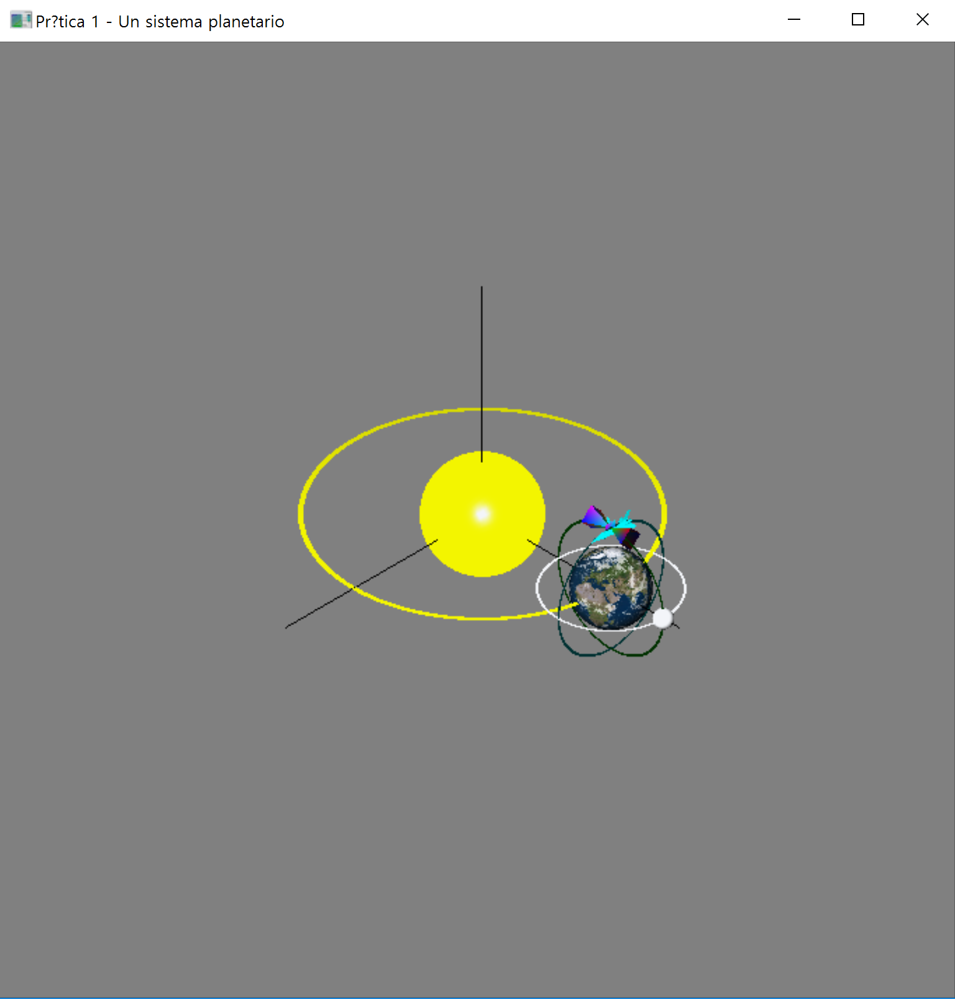
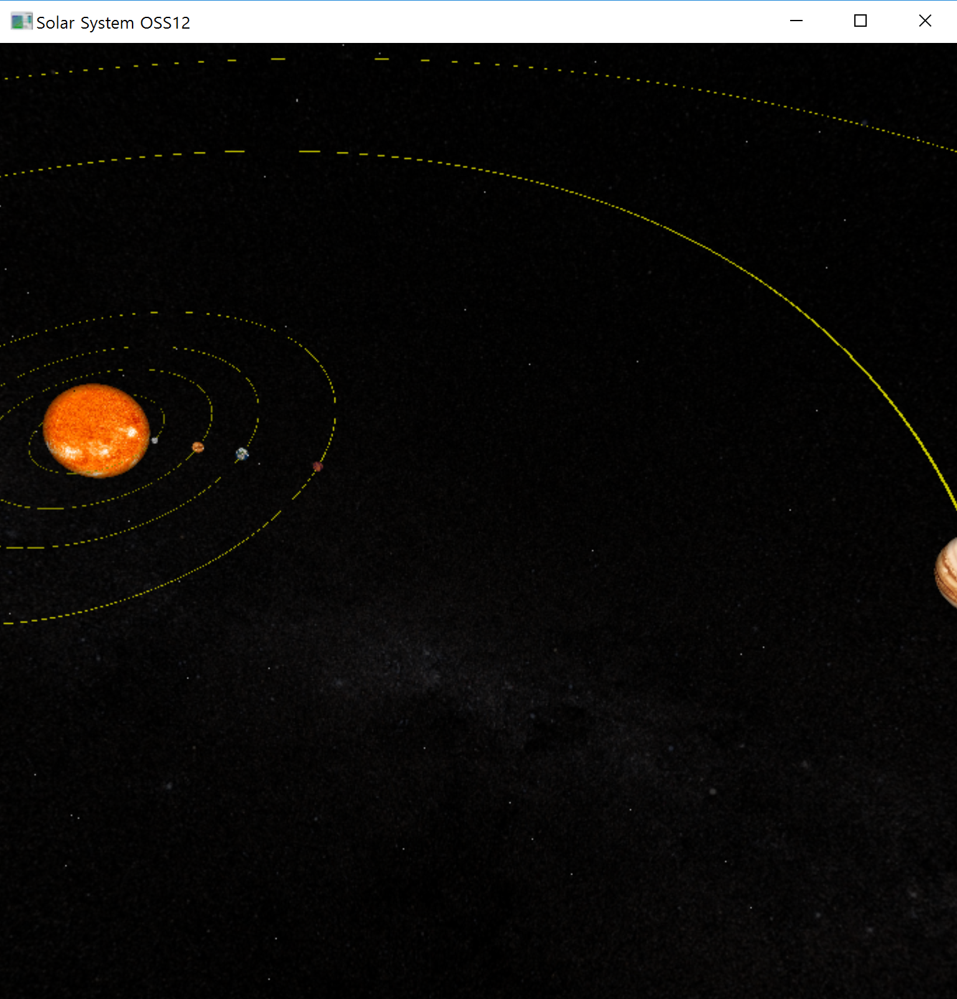

For General User
Development process
이 프로그램의 저작권은 'Team OSS12' 에 있으며, 라이선스는 Apach License 2.0 를 채택하고 있습니다. 자세한 라이선스 정보와 원저작자의 정보를 확인하시려면 여기 를 클릭십시오.본 프로그램은 세종대학교 (Sejong University, South Korea) 오픈소스SW개론 강좌의 Team OSS12 에 의해 제작되었으며, 2017년 4월 30일부터 프로젝트를 시작하여 6월4일까지 진행하였습니다. 현재 개발이 완료된 상태이며 가장 최신 버전 V3.0 OSS12 파일을 사용자에게 제공합니다.
Team OSS12는 오픈소스SW개론 강좌에서 배운 지식들을 토대로 4월30일 'OSS12'라는 이름으로 별도의 Repository를 개설하였습니다. '이상협' 팀원의 제안으로 현재 OpenGL 을 기반으로한 프로젝트를 수행할 준비를 하였습니다. 'Dan Cristia, Rotaru'의 SolarSystem 를 fork 함으로서 프로젝트가 시작되었습니다. 개발 초기 단계에는 회색을 바탕으로한 태양계 모형 일부와 지구, 그리고 지구를 감싸는 궤도 몇 가지가 전부였습니다.
4월30일 기준으로 매주 목요일마다 팀 회의를 진행하였으며, 팀 회의때는 프로젝트 진행 현황, 피드백, 버그 개선, 아이디어 공유를 지속적으로 실시하였습니다. 이외에도 Github에서 제공하는 기능들(Issue, Wiki 등)을 활용하여, 실시간으로 상황을 공유하고, 필요 파일들을 업로드 하였습니다.
 개발 중간 단계를 거쳐 후반 단계까지 총 5회의 버젼 업데이트, 100회 이상의 Commit이 이루어졌습니다. 기존 코드에 존재하지 않았던 마우스, 메뉴 기능들을 추가하여 코딩하였고, 다양한 OpenGL 내장함수들을 활용하여 보다 완성도 있는 태양계 시뮬레이터를 제작하였습니다. 뿐만 아니라 원작자가 작성 코드의 비효율적인 부분들을 모두 개선하였고, 재사용성을 고려하여 각 기능을 수행하는 함수들을 세분화하였습니다. 이외에도 주석 추가, 사용자를 위한 메뉴얼 제작 등도 이루어졌습니다. 개발 초기에 상정했던 프로젝트 목표와 모두 부합하게 프로그램을 만들었습니다.
Making Solar System Simulator